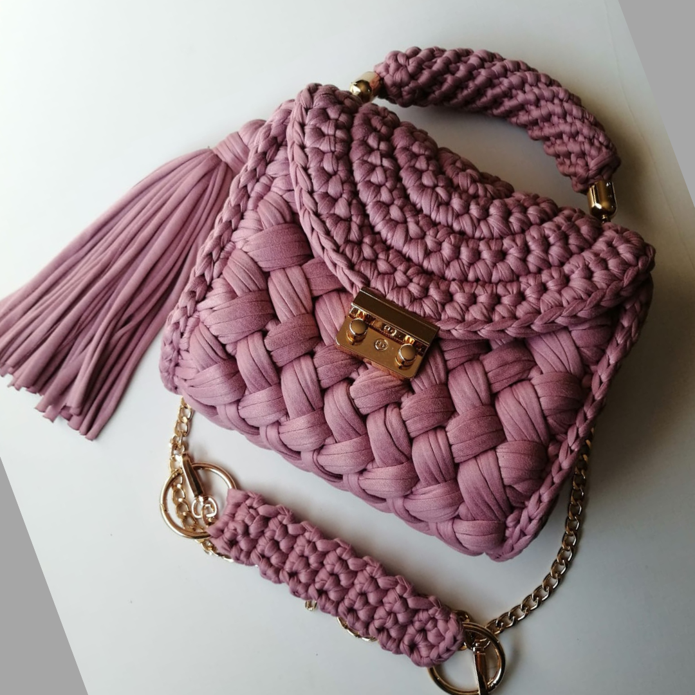
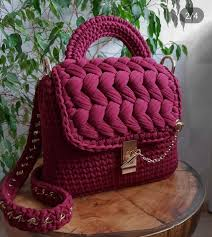
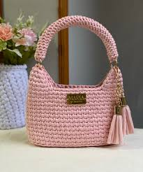

Bolso Rosa Malva
Romántico, elegante y con detalles dorados.
Bolsos tejidos con encanto
Descubrí bolsos femeninos, delicados y llenos de personalidad. Cada diseño combina textura, color y detalles dorados para acompañarte en momentos especiales o en tu día a día.
Ver colección
En Tejidos Grettel creemos que un bolso no solo guarda tus cosas: también cuenta tu estilo. Por eso elegimos diseños tejidos, suaves, románticos y modernos, perfectos para regalar o consentirte.
Colección destacada
Tocá una imagen para verla ampliada con su descripción.
Romántico, elegante y con detalles dorados.

Un tono fuerte, femenino y muy sofisticado.

Suave, delicado y perfecto para todos los días.
Pedidos y consultas
Consultá disponibilidad, colores y precios por WhatsApp o redes sociales.